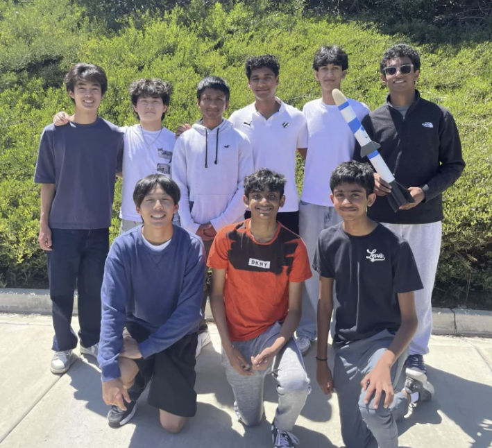
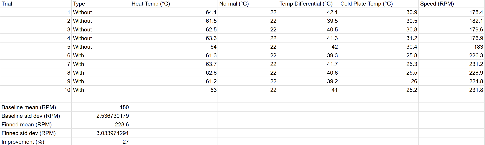
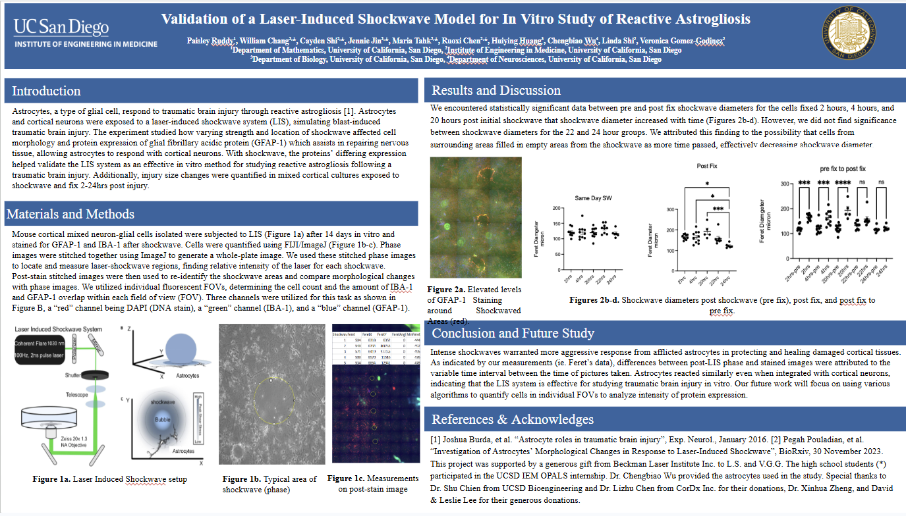

Rocketry

As co-president of the Del Norte Aerospace Club, I directed a nine-person team in qualifying for the American Rocketry Challenge Nationals, with the top 20th score of 1,107 teams. Feel free to email me to view the drag brake code I designed for our air brake module.
Stirling Engines for Mars Rovers

A grant-funded NASA project on passive heat rejection in low-temperature-differential Stirling engines, aimed at rover power efficiency on Mars. I designed cold-plate heat-sink fins that raised flywheel speed 27% at a 40 °C temperature differential.
OPALS

I led a team of 6 interns to investigate how laser-induced shockwaves can simulate the effects of Traumatic Brain Injury through reactive astrogliosis activation.